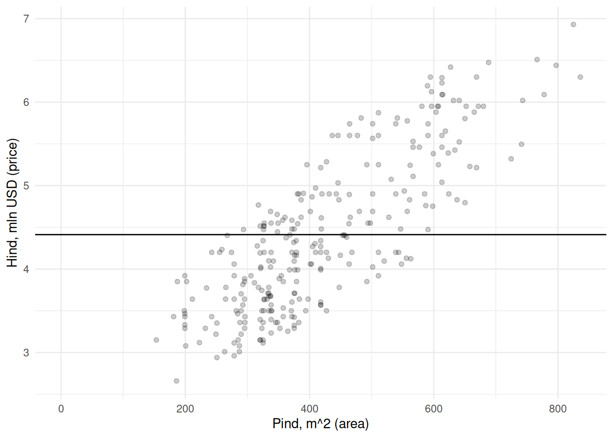
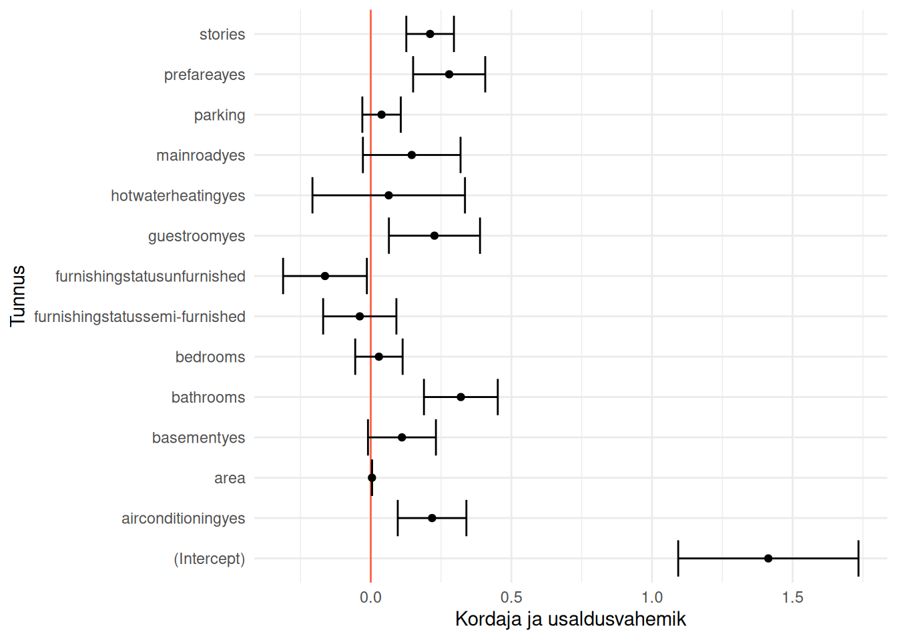

Korrelatsioonanalüüsis uurisime seost kahe tunnuse vahel, võtmata arvesse põhjuslikku seost nende vahel (Peatükk 12). Lineaarse regressiooni korral mõõdame samuti seost tunnuste vahel, aga selliselt, et üks tunnustest on alati määratud ühest või mitmest tunnusest sõltuvaks. See sõltuvus on sealjuures puhtalt matemaatiline ega tähenda põhjuslikku seost (Peatükk 13).
Mõiste
Regressioonanalüüsi (regression analysis) käigus leitakse ja kirjeldatakse regressioonimudel, mis näitab, kuidas väljundtunnus sõltub keskmiselt ühest või mitmest sisendtunnusest. Lisaks seoste kirjeldamisele võimaldab leitud mudel prognoosida väljundtunnuse väärtusi.
Regressioonanalüüs ei ole üks konkreetne statistiline protseduur, vaid see mõiste hõlmab palju mitmesuguseid statistilisi mudeli kujusid ja nende hindamise viise. Sealjuures on loodud ka väga keerukaid matemaatilisi seletusi sellele, kuidas tunnused omavahel seotud on. Käesolevas õpikus kasutatakse regressioonanalüüsiga seotud mõisteid lihtsustatult: - lineaarne regressioon viitab ainult vähimruutude meetodil leitud lineaarsele regressioonile ning - logistilise regressioonina käsitletakse regressioonanalüüsi logit-mudeli alusel, mis üldiselt on samuti lineaarne regressioonimudel.
Regressioonanalüüs on peamine analüütiline meetod majandusteadustes ja kogu ökonomeetria põhineb erineva matemaatilise kujuga regressioonimudelitel. Regressioonanalüüsi kasutades saab vastata küsimustele, mille korral meid huvitab, kuidas sõltub üks tunnus teisest või teistest.
Kui palju kasutab mingit teenust teatud tunnustega klient?
Millest sõltub kasutatud auto hind?
Kui suur on kasum, kui turundusele kulutada teatud summa?
Järgnevalt üritame regressioonanalüüsi abil seletada ja prognoosida majade hindasid.
Soovime määrata majale hinna, mis vastaks võimalikult täpselt selle turuväärtusele. Kuidas seda teha? Mõistlik oleks lähtuda teiste sarnaste majade hindadest. Võiksime otsida sarnase pinna, tubade arvu ja teiste asjakohaste tunnustega maju. Konkreetse maja hinna saaksime määrata umbkaudselt sarnase majade hindade alusel. Täpsema turuväärtuse saaksime aga siis, kui leiaksime matemaatilise seose majade erinevate tunnuste ja hindade vahel.
Vaatame kuidas on majade väärtused seotud nt pinnaga.
Maja pinna ja hinna vahel paistab olevat positiivne seos: mida suurem maja, seda kõrgem hind. Kõige lihtsam oleks sobivama hinna leidmiseks arvutada lihtsalt kõikide majade keskmine hind. See oleks kõige parem pakkumine juhul, kui meil ei oleks majade kohta mingit muud teavet peale hinna. Aga kui kasutame lihtsalt keskmist, siis kui täpse tulemuse saaksime majade pindasid arvesse võttes?

Näeme et kui pakume kõikide majade väärtuseks keskmise hinna, siis saaksime antud juhul täpse tulemuse ainult keskmise pinnaga majade korral. Võime iga maja kohta arvutada ja joonisel kujutada ka hinna määramisel keskmist kasutades tehtud vea.
Väiksemate majade väärtust hindame liiga suureks, samas kui suurte majade väärtust alahindame. Seega võiksime sirgele määrata sellise asukoha ja tõusu, et see väljundtunnuse suhtes võimalikult täpselt punktipilve läbiks. Selline sirge on järgneval joonisel Joonis 18.1.
Joonis 18.1: Regressioonisirge
Kuidas selline sirge leida? Et võimalikult täpselt määrata iga maja hind lähtudes pinnast, tuleks leida selline sirge, mille korral hinna määramisel tehtud viga oleks võimalikult väike.
Kirjeldatud protseduuri võib nimetada vähimruutude meetodiks.
18.1 Regressioonimudel
Matemaatiliselt kõige lihtsam viis arvskaalal väljundtunnusega regressioonimudeli parameetreid hinnata ongi vähimruutude meetod.
Mõiste
Lihtne vähimruutude meetod (ordinary least squares) on regressioonmudeli parameetrite leidmise viis. Selle käigus leitakse maatriksalgebra alusel selline mudeli vabaliige ja sisendtunnus(t)e kordaja(d), mille korral regressioonisirge teeks võimalikult väikse vea väljundtunnuse väärtuste seletamisel.
Empiiriliselt ongi regressioonimudelis põhjuslik seos seetõttu, et selle hindamisel on eesmärk võimalikult täpselt seletada just väljundtunnuse väärtusi. Lihtsustatult võib regressioonimudelist mõelda kui mistahes statistilisest mudelist. See kirjeldab lihtsalt seost sisend- ja väljundtunnuste vahel ning võimaldab selle kirjelduse alusel väljundtunnuse väärtusi prognoosida.
flowchart LR
i["Sisendtunnus(ed)"] --> m(Mudel) --> o[Väljundtunnus]
Mõiste
Regressioonimudel määrab seose ühe või enama sisendtunnuse ja ühe väljundtunnuse vahel selliselt, et viga väljundtunnuse prognoosimisel oleks võimalikult väike. Regressioonimudelit saab kasutada
seoste kirjeldamiseks iga sisendtunnuse ja väljundtunnuse vahel ning
väljundtunnuse väärtuse prognoosimiseks teatud sisendtunnus(t)e väärtuste alusel.
R keeles saab vähimruutude meetodit rakendada funktsiooniga lm() (ehk lineaarne mudel). Leiame mudeli, mis selgitab, kuidas maja pind (area) määrab maja hinna (price). Selleks tuleb funktsioonis mudel määratleda valemi kujul price ~ area.
mPind <-lm(price ~ area, majad)
Vähimruutude meetodi alusel saab arvutada ka mudeleid, milles sisendtunnus on mõõdetud nimiskaalal. Vaatame nt, kuidas lähedus suurele teele (mainroad) on seotud maja hinnaga.
mTee <-lm(price ~ mainroad, majad)
Regressioonimudelisse saame lisada ka mitu tunnust korraga, nt mõlemad eelnevalt nimetatud sisendtunnused.
mPindTee <-lm(price ~ area + mainroad, majad)
Üks võimalik lähenemine regressioonanalüüsile on lisada mudelisse kõik sisendtunnused, mis teoreetiliselt võiksid seletada väljundtunnuse väärtusi. Järgnevas näites lisame sisendtunnustena kõik andmetabelis olevad tunnused, va väljundtunnus.
mKõik <-lm(price ~ ., majad)
18.2 Regressioonikordajad
18.2.1 Arvtunnus
Eelnevalt hinnatud regressioonimudel maja hinnna leidmiseks pinna alusel sisaldab kahte regressioonikordajat.
mPind
Call:
lm(formula = price ~ area, data = majad)
Coefficients:
(Intercept) area
2.10211 0.00546
Neist esimene on vabaliige (Intercept) ehk väljundtunnuse väärtus seal, kus sirge ristub sisendtunnuse teljega. See on maja hind juhul, kui maja pinna väärtus on null. Antud juhul näeme, et ilma pinnata maja hind oleks empiiriliselt 2.1 mln USD. Kuna kasutatud andmetes päriselt ilma pinnata majasid ei ole, siis ei ole mõtet vabaliikmele ka tähendust omistada.
Märkus
Vähimruutude meetodil leitud regresioonimudeli arvtunnuse kordaja näitab, kui mitme ühiku võrra suureneb väljundtunnuse väärtus, kui sisendtunnuse väärtus suureneb ühe ühiku võrra.
Vabaliikmele järgneb sisendtunnuste kordaja ehk sirge tõus sisendtunnuse suurenemisel ühe ühiku võrra. See näitab, kui mitme mln USD võrra on suurem maja hind, kui pind on suurem ühe ruutmeetri võrra. Näeme, et iga ruutmeeter lisab maja hinnale 0.00546 mln USD ehk 5460 USD. See tõus on kujutatud joonisel Joonis 18.1.
Kui meid huvitab väljundtunnuse muutus sisendtunnuse mitme ühikulise kasvu korral, siis võime kordaja vastava konstandiga korrutada. Nt 1000 ruutmeetrit pinda lisab eelneva mudeli alusel maja hinnale \(0.005 \times 1000 = 5\) mln USD.
18.2.2 Nimitunnus
Kui mudelis on nimitunnused, siis on regressioonikordajate tõlgendused veidi erinevad. Üks tunnuse väärtustest on aluseks teis(t)ele, mis muudab regressioonikordajate tõlgendamise veidi keerulisemaks.
Vabaliige näitab sellisel juhul maja hinda juhul, kui maja ei asu tee lähenduses (mainroad == 'no'), sest tunnuse kordaja on mainroadyes ehk mainroad == yes. Ehk tunnuse mainroad väärtus no on võrdlusväärtus. Tunnuse kordaja (mainroadyes) näitab, kui mitme USD võrra on sellest kallim maja, mis asub tee lähenduses. Järgneval joonisel Joonis 18.2 on vabaliige ja tunnuse kordaja esitatud vastavalt pideva ja katkendliku joonega.
Joonis 18.2: Nimitunnus regressioonimudelis
Näeme, et suurest teest eemal asuva maja (mainroad == 'no') hind on keskmiselt 3.79 mln USD. Suurel teel asuva maja väärtus on aga sellest 0.71 mln USD võrra kõrgem ehk 4.5 mln USD.
Märkus
Vähimruutude meetodil leitud regresioonimudeli vabaliige näitab väljundtunnuse väärtust sisendtunnuse võrdlusväärtuse korral. Nimitunnuse muude väärtuste kordajad näitavad, kui mitme ühiku võrra on väljundtunnuse väärtus suurem võrreldes nimitunnuse võrdlusväärtusega.
Pea meeles!
Tunnuste liik R keele objektis määrab, mil viisil hinnatakse seos tunnuste vahel. Nt kui nimitunnus on sisestatud arvudena, siis väljastab vastav R keele funktsioon regressioonikordaja, hoolimata sellest, et sellel sisulist tähendust ei ole.
18.2.3 Arv- ja nimitunnused
Kui mudelis on mitu tunnust, siis jääb kordajate tõlgendus samaks.
mPindTee
Call:
lm(formula = price ~ area + mainroad, data = majad)
Coefficients:
(Intercept) area mainroadyes
2.023472 0.005383 0.126777
Küll aga näeme, et kordajad on erinevad võrreldes eelnevate ühe sisendtunnusega mudelitega. Põhjus on selles, et sisendtunnused on omavahel seotud ja mõjutavad seetõttu teineteise seost väljundtunnusega (vt Peatükk 14).
Jooniselt näeme, et iga ruutmeetriga kaasneb 0.005 mln USD võrra kõrgem hind. Suure tee lähendus (katkendlik sirge) lisab hinnale 0.127 mln USD.
Samuti märkame, et suure tee läheduse kordaja oluliselt on viimases mudelis tunduvalt madalam kui eelnevas ilma pinnata mudelis. See tähendab, et suur osa suure tee lähendusega seletatavast hinna hajuvusest tuleneb hoopis majade pinnast.
Pea meeles!
Sisendtunnuste regressioonikordajad on enamasti teineteisest sõltuvad. Mida suurem on korrelatsioon nende vahel, seda enam muutub ühe sisendtunnuse kordaja, kui lisame mudelisse või eemaldame mudelist teise.
18.3 Regressioonikordajate usaldusvahemik
Enamasti leiame regressioonikordajad valimi alusel, mistõttu on tegemist (punkt)hinnangutega. Nii saa me olla kindlad, kas kordajad ja vastavad seosed ka üldiselt kehtivad. Regressioonikordajate kehtivust saame hinnata usaldusvahemike alusel (Peatükk 17).
R keeles saame regressioonimudeli kordajate usaldusvahemikke kuvada funktsiooniga confint(). See funktsioon kuvab teoreetiliselt arvutatud, mitte taasvaliku alusel leitud usaldusvahemikud.
mudel <-lm(price ~ ., majad)confint(mudel, level = .95)
Kordajate korral tuleb uurida, kas usaldusvahemik katab nulli või mitte.
Kui katab, siis me ei saa olla kindlad, et kordaja ei ole 0 ehk seos võib ka puududa.
Kui ei kata, siis võime järeldada, et seos kehtib.
Eelnevalt esitatud usaldusvahemikke aitab ehk paremini mõista nende uurimine joonisel.

Näeme, et posiivne seos hinnaga on tunnustel stories, prefarea, guestroom, bathroom ja airconditioning. Maja hind on aga madalam, kui tunnus furnishingstatus == unfurnished.
Enamasti kasutatakse regressioonikordajate üldistatavuse hindamiseks aga statistilist hüpoteeside testimist. Vastavate p-väärtuste kuvamiseks saab kasutada funktsiooni summary().
Nagu nägime ka eelnevatest näidetest, siis regressioonimudelit iseloomustav sirge ei kata peaaegu kunagi kõiki vaatlusi.
Joonis 18.3: Regressiooni jäägid
Nagu näeme, siis vähemalt enamike majade korral ei ole hind täpselt selline nagu mudeli alusel oletada võiks. Ehk alati esinevad regressiooni jäägid (residuals), mis joonisel Joonis 18.3 on esitatud punasega. Need jäägid saame aga arvutada ja seejärel kasutada regressioonimudeli headuse hindamiseks. Väikeste vigadega regressioonimudel on mõistagi parem kui mudel, mis teeb suuri vigasid.
Regressioonimudeli headuse hindamiseks jääkide alusel on välja mõeldud palju erinevaid mõõdikuid, sh R-ruut, keskmine ruutviga, keskmine absoluutviga.
Jääkide alusel saame hinnata ka seda, kas regressioonimudel vastab mitmesugustele eeldustele. Üks eeldus regressioonimudeli kehtimiseks on jääkide allumine normaaljaotusele ehk nulli lähedal olevaid jääke peaks olema rohkem kui nullist palju erinevaid jääke.
18.5 Prognoosimine
Eelnevalt kasutasime regressioonimudelit, et kirjeldada mil viisil sõltuvad väljundtunnuse väärtused sisendtunnus(t)e väärtustest. Kuna teame seda sõltuvust, siis saame ka arvutada konkreetsete tunnustega maja hinna. Kui meid huvitab nt 700 ruutmeetrise maja hind, siis peaksime valima regressioonisirgel sellise hinna, mille korral pind on 700 ruutmeetrit.
R keeles saame mudeli alusel prognoosimiseks kasutada funktsiooni predict() alljärgnevalt.
mudel <-lm(price ~ area, majad)predict(mudel, list(area =700))
1
5.924087
Näeme, et 456 ruutmeetrise maja turuväärtus on keskmiselt 4.59 mln USD.
Mitme sisendtunnusega mudeli korral peame prognoosimiseks määrama mitu sisendtunnuse väärtust.
mudel <-lm(price ~ area + bedrooms, majad)predict(mudel, list(area =678, bedrooms =3))
1
5.780631
Kolme magamistoaga 678 ruutmeetrise maja turule vastav hind on aga 5.78 mln USD.